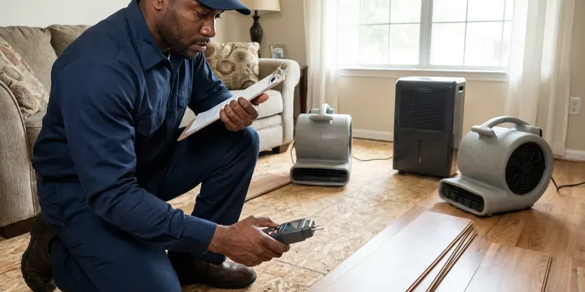

Sewer Line Inspection in Nitro, WV
Know the condition of your sewer before you buy, sell or dig. We inspect lines across Nitro, WV and explain every finding.
- Same-Day Camera Inspections
- Recorded HD Video Included
- Modern Camera Technology
- Quick, Accurate Diagnostics

See Inside Your Sewer Line Before Small Problems Grow in Nitro, WV.
Don't let a hidden sewer problem become a major headache. Contact GJK Plumbing today for a complete evaluation.
Dependable Sewer Line Inspection Services in Nitro, WV
When you need a clear picture of your underground plumbing, GJK Plumbing is your reliable partner for sewer line inspection in Nitro, WV. Our experienced plumbers can identify problems caused by tree roots, shifting soil or aging pipes, so you understand the condition of your system before making any repair decisions.
Our expertise includes:
- Detailed camera inspections for main sewer lines.
- HD push camera inspection of 2 to 8 inch sewer lines
- Identifying root intrusion and pipe corrosion.

Additional Plumbing Maintenance Services in Nitro, WV
Our maintenance and specialty plumbing services in Nitro, WV protect your home year-round and extend the life of every system.


Customers
Why Choose GJK Plumbing for Sewer Line Inspection in Nitro, WV?
We do not just record a video and leave. We walk you through the footage, explain what each finding means and give you honest options.
- Peace of Mind, Know the true condition of your sewer system and plan for any necessary maintenance or repairs.
- Property Protection, Early detection of leaks or blockages prevents water damage to your home and yard.
- Cost-Effective, By accurately diagnosing the problem, we help you avoid unnecessary excavation and repairs.
Citywide Coverage
Wherever your property is in Nitro, we can typically schedule a sewer inspection within a day or two. We work around real estate deadlines and inspection periods.
Experienced Team
Our technicians have inspected thousands of feet of sewer pipe and know how to read every type of defect. They can tell the difference between minor scale and a structural break.
Safety-First Approach
Our inspections are non-invasive and use existing cleanouts or vents whenever possible. If a cleanout must be installed, it is done to the plumbing code used by your city or county.
Trusted Certified Nitro Plumbing Services Professionals
At GJK Plumbing, we take pride in providing certified plumbing services throughout Nitro, WV. Backed by leading industry credentials, our experienced plumbers combine technical skill with genuine customer care. Whether it is repair, installation, or maintenance, we follow strict safety and quality standards to deliver lasting results you can trust.
Call Us Now PHCC Plumbing Contractor Recognition
PHCC Plumbing Contractor Recognition Better Business Bureau (BBB) Accreditation
Better Business Bureau (BBB) Accreditation Angi Certified Pro
Angi Certified Pro ISO 9001 Quality Management Certification
ISO 9001 Quality Management CertificationModern Sewer Line Inspection Services in Nitro, WV
Locating Lost Items and Pipe Mapping in Nitro, WV
Beyond diagnosing damage, our sewer cameras are also very useful for locating lost items dropped down drains, such as jewelry or small tools. We can also use the camera's transmitter to accurately map the layout of your underground sewer lines, which is especially useful for older homes in Nitro, WV where original blueprints might be unavailable or inaccurate. This mapping helps plan future landscaping or construction projects.

Root Intrusion Detection in Nitro, WV
Tree roots are a common problem for sewer lines, especially with the mature trees found in many Nitro neighborhoods. Roots seek out moisture and can infiltrate even tiny cracks in pipes, growing and eventually causing severe blockages or pipe damage. Our high-resolution cameras clearly show root masses, allowing us to recommend fitting solutions like hydro-jetting or pipe repair. We use professional locators to mark the exact spot above ground.
Post-Clearing Sewer Camera Inspection in Nitro
After a backup is cleared, a camera inspection reveals why it happened. It might be grease, roots, a broken section or an object stuck in the line. Knowing the cause helps you avoid repeat backups. We often recommend an inspection after any main line clearing.
Video Camera Inspection for Blockages in Nitro
When drains slow down or stop completely, a blockage is often the cause. Our sewer camera inspection can pinpoint exactly where the blockage is located and what's causing it, whether it's grease buildup, foreign objects or sediment. This precision allows us to perform targeted clearing without unnecessary digging, saving you time and money. We can navigate bends and junctions to get a full view of the pipe's interior.
Sewer Line Inspection Cost Comparison in Nitro, WV
A standard residential sewer camera inspection typically costs $150 to $400. Inspections that require clearing first or roof access may cost more. Compared with sewer repairs that can run $3,000 to $15,000 or more, an inspection is a small investment. It can save you from buying a home with a costly sewer problem.
Pre-Purchase Sewer Line Inspections in Nitro
Buying a home is a significant investment. Don't let hidden sewer line problems surprise you after closing. GJK Plumbing offers pre-purchase sewer line inspections in Nitro to give prospective homeowners a clear understanding of the property's underground plumbing health. This inspection can reveal costly issues like collapsed pipes, misaligned joints or old cast iron pipes, providing useful leverage during negotiations.
Preventative Sewer Line Inspections in Nitro, WV
Proactive maintenance is the best defense against major sewer line disasters. For homes and businesses in Nitro, WV, especially those with older plumbing or heavy landscaping, regular preventative sewer line inspections can catch minor issues before they become emergencies. We can identify early signs of root intrusion, minor cracks or sediment buildup, allowing for early intervention and extending the life of your sewer system.

Sewer Scope for Slow Drains in Nitro
If you are experiencing consistently slow drains or recurring clogs, a sewer scope inspection can pinpoint the exact cause. Instead of guessing, our camera can show whether the issue is a simple blockage, a pipe belly or more serious damage like a collapse. This precise diagnosis in Nitro allows us to recommend the most effective and least invasive repair, saving you from unnecessary digging or repeated efforts.
Sewer Camera Inspection Near Me in Nitro, WV
When you search for 'sewer line inspection near me' in Nitro, WV, you want a local company that understands the plumbing challenges of the area. GJK Plumbing is your reliable local expert, equipped with the knowledge and tools to quickly respond to your needs. We are familiar with the many types of sewer systems found throughout Nitro.
Our team is always ready to dispatch skilled plumbers to your location for a prompt and thorough sewer line inspection. We pride ourselves on being a dependable 'near me' plumbing solution, offering efficient service and clear communication. Don't hesitate to reach out to GJK Plumbing for prompt assistance with your sewer line concerns.
GJK Plumbing at a Glance
- Licensed and insured plumbers serving Nitro, WV
- 24/7 emergency service with same-day scheduling
- Upfront, flat-rate pricing before work begins
- 4.8-star rated by 832+ West Virginia customers
Nitro Map
Nitro Information
- Population
- 6,426
- Area codes
- Local
- Service area
- Nitro and communities within 40 miles
- Nearby
- St. Albans, Cross Lanes, Dunbar, Teays Valley
Older homes in Nitro, WV often have cast iron and clay sewer lines exposed to aggressive tree roots and ground movement, so a camera inspection is the most reliable way to know a line's true condition. Manufactured homes are common in rural West Virginia, and their plumbing often needs special attention to skirting, insulation and freeze protection.
Expert Services
Trust our professionals for reliable GJK Plumbing solutions in Nitro, WV.
Our Specialized Plumbing Services in Nitro, WV
At GJK Plumbing, we provide a complete range of plumbing services across Nitro, WV. From leak detection to full system installations, our team ensures fast, precise, and affordable service for both residential and commercial properties. Explore our core services below:


How Our Sewer Line Inspection Process Works in Nitro, WV
Our sewer line inspection process is simple and quick, with clear results you can watch for yourself.
Request a Quote
Contact GJK Plumbing by calling (681) 223-3607 to schedule your sewer line inspection. We will discuss your concerns and set up a suitable appointment time.
Camera Insertion
Our technician will locate an access point, usually a cleanout, and insert a high-resolution camera into your sewer line. The camera is connected to a monitor for live viewing.
Detailed Video Analysis
We carefully guide the camera through your pipes, recording footage to identify any blockages, cracks, root intrusions or other damage. We note the exact location and nature of any issues.
Frequently Asked Questions About Sewer Line Inspection in Nitro
A residential sewer camera inspection in Nitro typically costs $150 to $400. Inspections that require clearing a blockage first or roof access may cost more. We give you a price before scheduling.
Yes. Repairs we perform, including spot repairs, lining and replacement, carry a written workmanship warranty. Materials include manufacturer warranties.
Most residential sewer line inspections can be completed within 1 to 2 hours. More extensive systems or those with difficult access points might take a bit longer. Our goal is to be careful without wasting your time.
No, a sewer line inspection is generally a very clean and non-invasive process. Our technicians access your sewer line through an existing cleanout, which is a capped pipe designed for plumbing access, usually located outside or in a basement. There is usually no digging involved.
You should consider an inspection if you have recurring clogs, slow drains, foul odors, gurgling noises from drains or lush spots in your yard. It's also highly recommended before purchasing an older home in Nitro or if you're planning major landscaping or construction projects.
We can often inspect through a roof vent or by removing a toilet. If neither works, we can install a cleanout to code, which also makes future maintenance simpler. We discuss options before starting.
Consumer cameras exist, but they often lack the length, clarity and locating ability of professional equipment. Interpreting footage also takes experience. A professional inspection gives you reliable results and a report you can use.
Most residential inspections take about one hour. Longer lines or lines that need clearing first can take two to three hours. We provide the video that same day.
What People Are Saying About Our Plumbing Experts?

Robert G.
The trenchless sewer replacement saved our front yard. They walked us through the camera inspection footage first so we knew exactly what we were paying for.
Sewer Line Replacement · Charleston, WV
Emily R.
I called GJK Plumbing for plumbing repair, and the technician was fast, polite, and thorough. They explained the problem clearly and fixed it the same day. I will definitely hire them again. Highly recommended!
Plumbing Repair · South Charleston, WV
Daniel K.
A pipe burst at 11 pm and they actually answered. The plumber showed up within the hour, shut everything down, and had us back to normal the next morning. Could not ask for more.
Emergency Plumbing · Nitro, WV
Sofia M.
Two new toilets installed in one visit, no mess left behind, and the tech even adjusted a faucet he noticed was dripping. Fair pricing and really friendly.
Toilet Installation · Cross Lanes, WV
Mark T.
When our office needed drain cleaning, GJK Plumbing provided quick, reliable service. The plumber arrived on time and made sure every drain flowed perfectly before leaving. Very satisfied.
Drain Cleaning · Cross Lanes, WVLaura S.
I scheduled a water heater replacement, and the team made the process smooth and affordable. The new unit works perfectly, and they cleaned up after completing the job.
Water Heater Replacement · South Charleston, WV